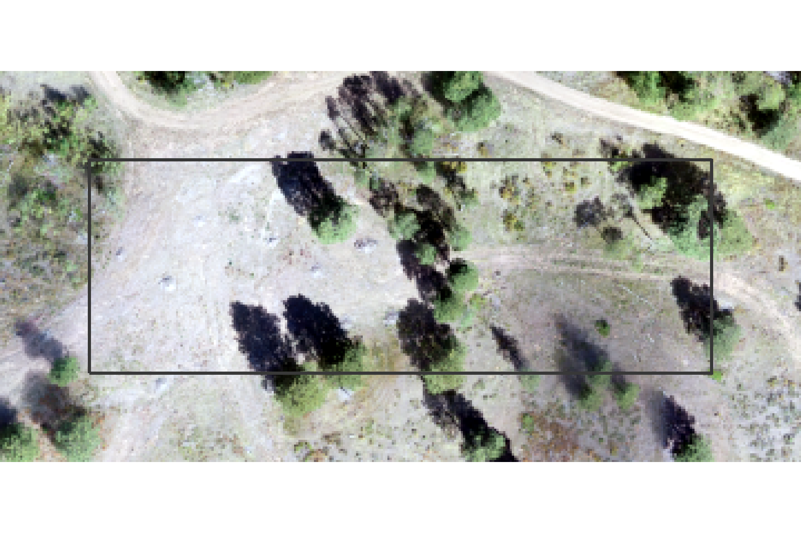
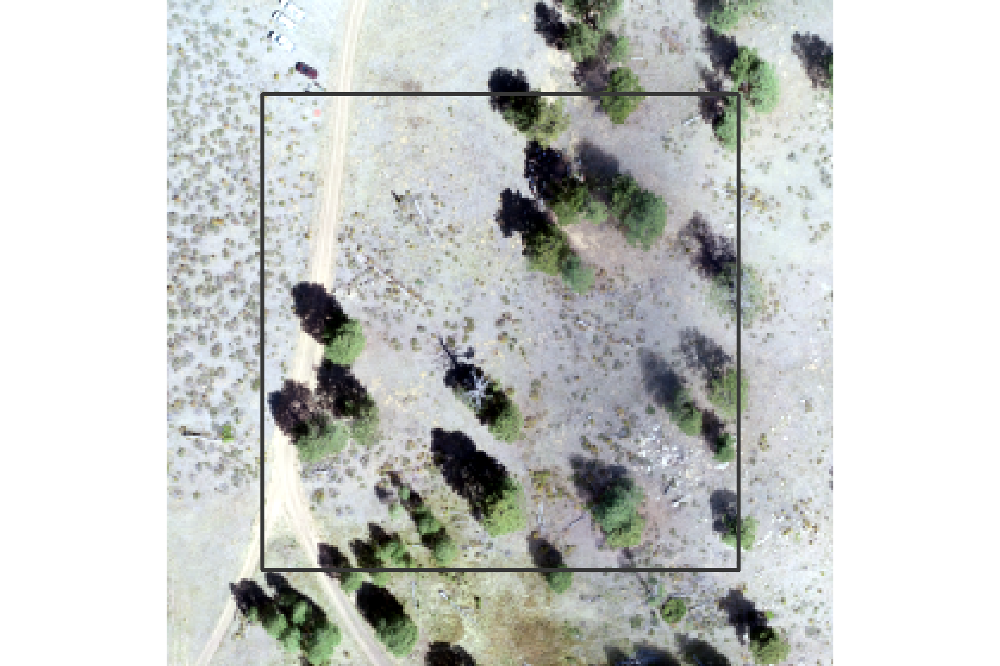
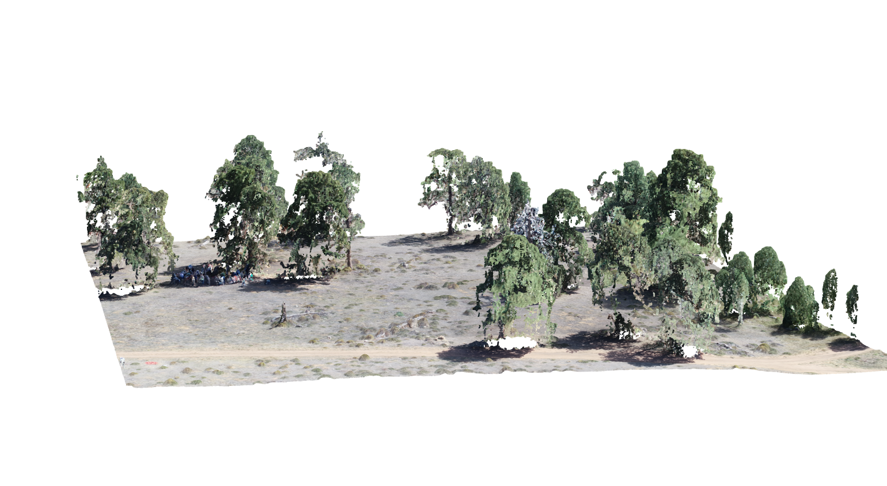
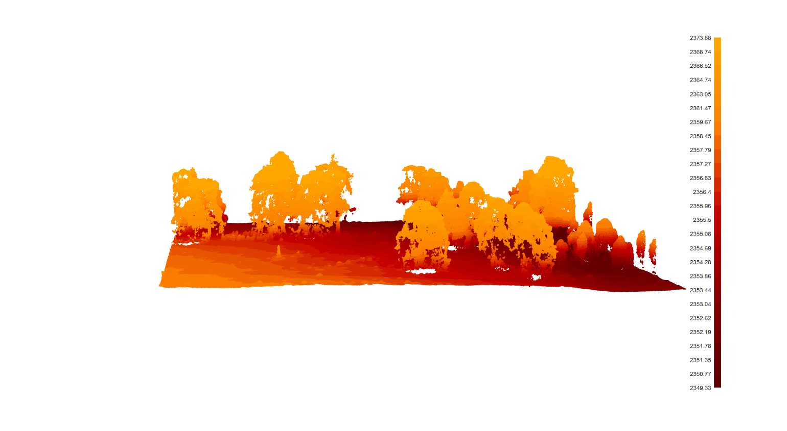
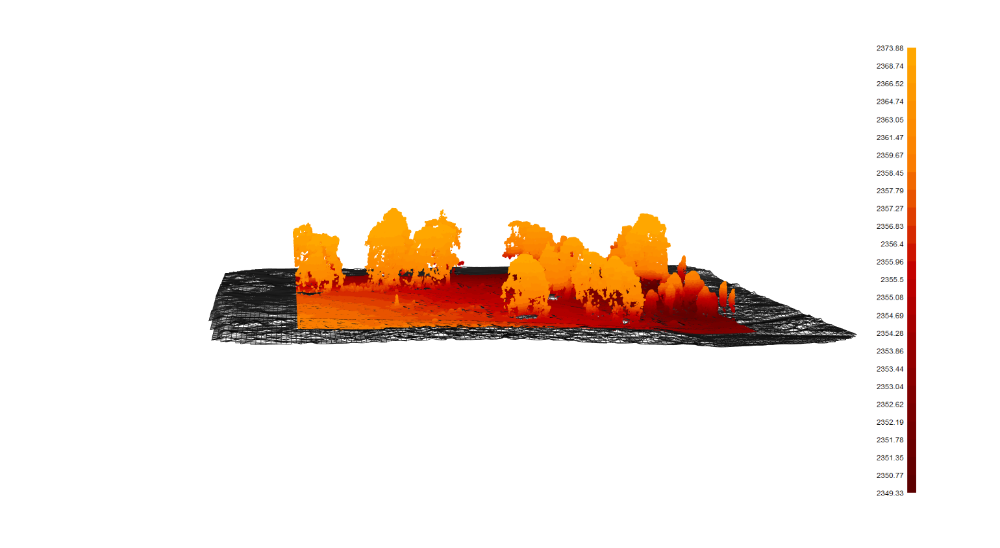
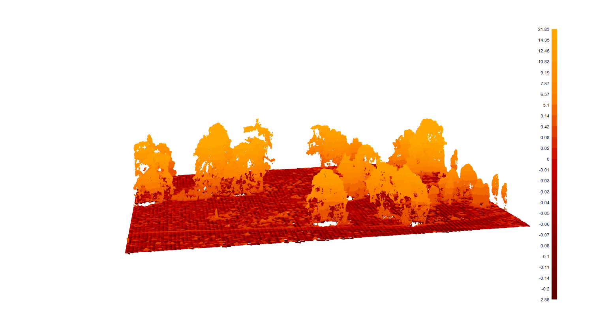
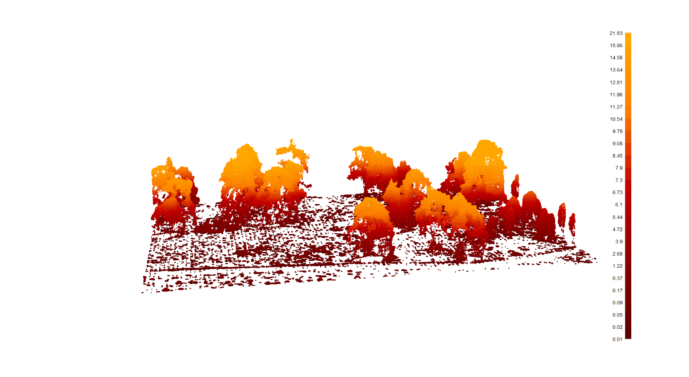

Section 2 Data Preparation
2.1 Data Load
Data loaded includes outputs from the UAS point cloud processing script: raw_las_ctg_info.gpkg, final_detected_crowns.gpkg, final_detected_tree_tops.gpkg. Also, loaded are experimental forest boundaries and timber harvest boundaries from the USFS FACTS database.
# where is the processed data from point_cloud_processing_run_combine.R ?
input_dir = "E:\\UAS_Collections\\MacGregorRanch_202409\\point_cloud_processing_delivery"
# set output directory
delivery_dir = "E:\\UAS_Collections\\MacGregorRanch_202409\\processed"
dir.create(delivery_dir, showWarnings = FALSE)
### read data from point_cloud_processing
#rasters
dtm_rast = terra::rast(paste0(input_dir, "/dtm_1m.tif"))
chm_rast = terra::rast(paste0(input_dir, "/chm_0.25m.tif"))
# crowns = terra::rast(paste0(input_dir, "/top_down_detected_tree_crowns.tif"))
# las extent
las_ctg_dta = sf::st_read(paste0(input_dir, "/raw_las_ctg_info.gpkg"))
# vectors
# crown polygons
crowns_sf_with_dbh = sf::st_read(paste0(input_dir, "/final_detected_crowns.gpkg")) %>%
dplyr::filter(tree_height_m >= 2) %>%
dplyr::select(-c(basal_area_ft2)) %>%
# use the regional dbh estimate
dplyr::mutate(dbh_cm = reg_est_dbh_cm) %>%
dplyr::rename(
reg_est_lower_dbh_cm = reg_est_dbh_cm_lower
, reg_est_upper_dbh_cm = reg_est_dbh_cm_upper
)
# tree top points
treetops_sf_with_dbh = sf::st_read(paste0(input_dir, "/final_detected_tree_tops.gpkg")) %>%
dplyr::filter(tree_height_m >= 2) %>%
dplyr::select(-c(basal_area_ft2)) %>%
# use the regional dbh estimate
dplyr::mutate(dbh_cm = reg_est_dbh_cm) %>%
dplyr::rename(
reg_est_lower_dbh_cm = reg_est_dbh_cm_lower
, reg_est_upper_dbh_cm = reg_est_dbh_cm_upper
)
# height range for use in estimation
height_range = dplyr::tibble(
tree_height_m = seq(
from = 0
, to = round(max(treetops_sf_with_dbh$tree_height_m)*1.05,0)
, by = 0.1 # by 0.1 m increments
)
)
# stand
stand_sf = sf::read_sf(paste0(input_dir, "/MacGregor_UAS_Flight_Boundary.kml")) %>%
sf::st_union() %>%
sf::st_as_sf() %>%
sf::st_transform(crs = sf::st_crs(las_ctg_dta)) %>%
sf::st_buffer(-5)
# set crs
proj_crs = sf::st_crs(las_ctg_dta)Define a function to convert columns in data frame from metric to imperial
calc_imperial_units_fn <- function(df) {
df %>%
# convert to imperial units
dplyr::mutate(
dplyr::across(
.cols = tidyselect::ends_with("_cm")
, ~ .x * 0.394
, .names = "{.col}_in"
)
, dplyr::across(
.cols = tidyselect::ends_with("_m")
, ~ .x * 3.28
, .names = "{.col}_ft"
)
, dplyr::across(
.cols = tidyselect::ends_with("_m2_per_ha")
, ~ .x * 4.359
, .names = "{.col}_ftac"
)
, dplyr::across(
.cols = tidyselect::ends_with("_per_ha") & !tidyselect::ends_with("_m2_per_ha")
, ~ .x * 0.405
, .names = "{.col}_ac"
)
, dplyr::across(
.cols = tidyselect::ends_with("_area_ha")
, ~ .x * 2.471
, .names = "{.col}_ac"
)
, dplyr::across(
.cols = tidyselect::ends_with("_m2")
, ~ .x * 10.764
, .names = "{.col}_ft2"
)
) %>%
dplyr::rename_with(
.fn = function(x){dplyr::case_when(
stringr::str_ends(x,"_cm_in") ~ stringr::str_replace(x,"_cm_in","_in")
, stringr::str_ends(x,"_m_ft") ~ stringr::str_replace(x,"_m_ft","_ft")
, stringr::str_ends(x,"_m2_per_ha_ftac") ~ stringr::str_replace(x,"_m2_per_ha_ftac","_ft2_per_ac")
, stringr::str_ends(x,"_per_ha_ac") ~ stringr::str_replace(x,"_per_ha_ac","_per_ac")
, stringr::str_ends(x,"_area_ha_ac") ~ stringr::str_replace(x,"_area_ha_ac","_area_ac")
, stringr::str_ends(x,"_m2_ft2") ~ stringr::str_replace(x,"_m2_ft2","_ft2")
, TRUE ~ x
)}
)
}apply the imperial calculation function
crowns_sf_with_dbh = crowns_sf_with_dbh %>% calc_imperial_units_fn()
treetops_sf_with_dbh = treetops_sf_with_dbh %>% calc_imperial_units_fn()Check the area of the stand and the flight
dplyr::bind_rows(
stand_sf %>%
dplyr::mutate(boundary_area_ha = sf::st_area(.) %>% as.numeric() %>% `/`(10000)) %>%
calc_imperial_units_fn() %>%
dplyr::select(tidyselect::starts_with("boundary_area")) %>%
sf::st_drop_geometry() %>%
dplyr::mutate(area = "stand")
, las_ctg_dta %>%
sf::st_union() %>%
sf::st_as_sf() %>%
dplyr::mutate(boundary_area_ha = sf::st_area(.) %>% as.numeric() %>% `/`(10000)) %>%
calc_imperial_units_fn() %>%
dplyr::select(tidyselect::starts_with("boundary_area")) %>%
sf::st_drop_geometry() %>%
dplyr::mutate(area = "flight")
) %>%
dplyr::relocate(area) %>%
dplyr::mutate(
dplyr::across(
tidyselect::where(is.numeric)
, ~ scales::comma(.x, accuracy = 0.1)
)
) %>%
kableExtra::kbl() %>%
kableExtra::kable_styling()| area | boundary_area_ha | boundary_area_ac |
|---|---|---|
| stand | 9.0 | 22.2 |
| flight | 24.2 | 59.8 |
2.2 Load orthomosaic rasters
Orthomosaic tif files from the UAS flight imagery that were created in Agisoft Metashape are loaded and stitched together via terra::mosaic.
# read list of orthos
ortho_list_temp = list.files(input_dir, pattern = "[^/]*ortho[^/]*\\.(tif|tiff)$", full.names = T)[] %>%
purrr::map(function(x){terra::rast(x)})
# ortho_list_temp[[1]] %>%
# terra::aggregate(20) %>%
# terra::plotRGB(r = 1, g = 2, b = 3, stretch = "hist", colNA = "transparent")
####### ensure the resolution of the rasters matches
# terra::res(ortho_list_temp[[1]])
## function
change_res_fn = function(r, my_res=1){
r2 = r
terra::res(r2) = my_res
r2 = terra::resample(r, r2)
return(r2)
}
## apply the function
ortho_list_temp = 1:length(ortho_list_temp) %>%
purrr::map(function(x){change_res_fn(ortho_list_temp[[x]], my_res=0.25)})
# terra::res(ortho_list_temp[[1]])
# ortho_list_temp[[1]] %>%
# terra::aggregate(2) %>%
# terra::plotRGB(r = 1, g = 2, b = 3, stretch = "hist", colNA = "transparent")
######## mosaic the raster list
ortho_rast = terra::mosaic(
terra::sprc(ortho_list_temp)
, fun = "min" # min only thing that works
)
# ortho_rast %>%
# terra::aggregate(4) %>%
# terra::plotRGB(r = 1, g = 2, b = 3, stretch = "lin", colNA = "transparent")2.2.1 Plot Orthomosaic from UAS
Let’s define a function to plot our orthomosaic
######################################################################################
# function to plot ortho + stand
######################################################################################
ortho_plt_fn = function(stand = las_ctg_dta %>% sf::st_union() %>% sf::st_as_sf()){
# convert to stars
ortho_st <- ortho_rast %>%
terra::subset(subset = c(1,2,3)) %>%
terra::crop(
stand %>% sf::st_buffer(20) %>% terra::vect()
) %>%
terra::aggregate(fact = 2, fun = "mean", na.rm = T) %>%
stars::st_as_stars()
# convert to rgb
ortho_rgb <- stars::st_rgb(
ortho_st[,,,1:3]
, dimension = 3
, use_alpha = FALSE
# , stretch = "histogram"
, probs = c(0.005, 0.995)
, stretch = "percent"
)
# ggplot
plt_rgb <- ggplot() +
stars::geom_stars(data = ortho_rgb[]) +
scale_fill_identity(na.value = "transparent") + # !!! don't take this out or RGB plot will kill your computer
scale_x_continuous(expand = c(0, 0)) +
scale_y_continuous(expand = c(0, 0)) +
labs(
x = ""
, y = ""
) +
theme_void()
# return(plt_rgb)
# combine all plot elements
plt_combine = plt_rgb +
geom_sf(
data = stand
, alpha = 0
, lwd = 1.5
, color = "gray22"
) +
theme(
legend.position = "top" # c(0.5,1)
, legend.direction = "horizontal"
, legend.margin = margin(0,0,0,0)
, legend.text = element_text(size = 8)
, legend.title = element_text(size = 8)
, legend.key = element_rect(fill = "white")
# , plot.title = ggtext::element_markdown(size = 10, hjust = 0.5)
, plot.title = element_text(size = 10, hjust = 0.5, face = "bold")
, plot.subtitle = element_text(size = 8, hjust = 0.5, face = "italic")
)
return(plt_combine)
}take it for a spin

2.3 What is this Point Cloud?
Let’s check out the raw point cloud real quick. We’ll load the raw las file generated via the Agisoft Metashape SfM algorithm. Notice the filter argument in the lidR::readLAS call to decimate the point cloud which we then keep only a region of interest using lidR::clip_roi
First, we’ll define our region of interest
stand_temp = dplyr::tibble(x = 454000, y = 4471990) %>%
sf::st_as_sf(coords = c("x","y"), crs = sf::st_crs(las_ctg_dta)) %>%
sf::st_buffer(50, endCapStyle = "SQUARE")
# check it with the ortho
ortho_plt_fn(stand = stand_temp)
# read in las
las_temp = list.files("E:\\UAS_Collections\\MacGregorRanch_202409", pattern = "*\\.(las|laz)$", full.names = T)[1] %>%
lidR::readLAS(filter = "-keep_random_fraction 0.6") %>%
lidR::clip_roi(stand_temp)what is this data?
## Rows: 2,283,188
## Columns: 18
## $ X <dbl> 453950.6, 453950.4, 453950.8, 453950.2, 453950.7, 45…
## $ Y <dbl> 4472039, 4472040, 4472040, 4472040, 4472040, 4472039…
## $ Z <dbl> 2359.812, 2360.000, 2359.811, 2360.045, 2359.813, 23…
## $ Intensity <int> 46774, 46003, 46774, 41891, 42148, 40606, 46260, 454…
## $ ReturnNumber <int> 1, 1, 1, 1, 1, 1, 1, 1, 1, 1, 1, 1, 1, 1, 1, 1, 1, 1…
## $ NumberOfReturns <int> 1, 1, 1, 1, 1, 1, 1, 1, 1, 1, 1, 1, 1, 1, 1, 1, 1, 1…
## $ ScanDirectionFlag <int> 1, 1, 1, 1, 1, 1, 1, 1, 1, 1, 1, 1, 1, 1, 1, 1, 1, 1…
## $ EdgeOfFlightline <int> 0, 0, 0, 0, 0, 0, 0, 0, 0, 0, 0, 0, 0, 0, 0, 0, 0, 0…
## $ Classification <int> 0, 0, 0, 0, 0, 0, 0, 0, 0, 0, 0, 0, 0, 0, 0, 0, 0, 0…
## $ Synthetic_flag <lgl> FALSE, FALSE, FALSE, FALSE, FALSE, FALSE, FALSE, FAL…
## $ Keypoint_flag <lgl> FALSE, FALSE, FALSE, FALSE, FALSE, FALSE, FALSE, FAL…
## $ Withheld_flag <lgl> FALSE, FALSE, FALSE, FALSE, FALSE, FALSE, FALSE, FAL…
## $ ScanAngleRank <int> 0, 0, 0, 0, 0, 0, 0, 0, 0, 0, 0, 0, 0, 0, 0, 0, 0, 0…
## $ UserData <int> 0, 0, 0, 0, 0, 0, 0, 0, 0, 0, 0, 0, 0, 0, 0, 0, 0, 0…
## $ PointSourceID <int> 1, 1, 1, 1, 1, 1, 1, 1, 1, 1, 1, 1, 1, 1, 1, 1, 1, 1…
## $ R <int> 49344, 48830, 49344, 44461, 44718, 43433, 47545, 483…
## $ G <int> 47031, 46260, 47031, 41891, 42405, 40349, 46517, 457…
## $ B <int> 40092, 37522, 39835, 35980, 35209, 34952, 41891, 380…We can plot the point cloud with RGB if the spectral information was exported from the SfM software

make a gif
library(magick)
if(!file.exists(paste0(delivery_dir, "/ptcld_rgb.gif"))){
rgl::close3d()
lidR::plot(las_temp, color = "RGB", bg = "white", legend = F)
rgl::movie3d( rgl::spin3d(), duration = 10, fps = 10 , movie = "ptcld_rgb", dir = delivery_dir)
rgl::close3d()
}
Things get fun when we view X and Y data in combination with Z data. The lidR::plot function allows for plotting powered by the rgl package to provide a versatile and interactive 3D viewer of points. The argument breaks enables to defined more adequate breaks in the color palette for example when intensity contains large outliers.
lidR::plot(las_temp
, color = "Z", breaks = "quantile", bg = "white", legend = T
, pal = harrypotter::hp(n=50, house = "gryffindor")
)
Here we will also plot with the DTM that we generated via the UAS point cloud processing script using lidR::add_dtm3d
p_temp = lidR::plot(las_temp
, color = "Z", breaks = "quantile", bg = "white", legend = T
, pal = harrypotter::hp(n=50, house = "gryffindor")
)
# add dtm to plot
lidR::add_dtm3d(
x = p_temp
, dtm = dtm_rast %>%
terra::crop(
stand_temp %>% sf::st_buffer(20) %>%
terra::vect() %>%
terra::project(terra::crs(dtm_rast))
) %>%
terra::mask(
stand_temp %>% sf::st_buffer(20) %>%
terra::vect() %>%
terra::project(terra::crs(dtm_rast))
) %>%
terra::focal(
w = 3
, fun = "mean"
, na.rm = T
, na.policy = "only"
)
)
Notice how the point altitudes are in meters above sea level. We can quickly normalize the point cloud using the DTM.
nlas_temp = las_temp - dtm_rast
# plot it
lidR::plot(nlas_temp
, color = "Z", breaks = "quantile", bg = "white", legend = T
, pal = harrypotter::hp(n=50, house = "gryffindor")
)
let’s get rid of all the ground points to focus on possible vegetation points
nlas_temp %>%
lidR::filter_poi(Z>=0.01) %>%
lidR::plot(color = "Z", breaks = "quantile", bg = "white", legend = T
, pal = harrypotter::hp(n=50, house = "gryffindor")
)
and let’s make a gif
if(!file.exists(paste0(delivery_dir, "/ptcld_z.gif"))){
rgl::close3d()
nlas_temp %>%
lidR::filter_poi(Z>=0.01) %>%
lidR::plot(color = "Z", breaks = "quantile", bg = "white", legend = F
, pal = harrypotter::hp(n=50, house = "gryffindor")
)
rgl::movie3d( rgl::spin3d(), duration = 10, fps = 10 , movie = "ptcld_z", dir = delivery_dir)
rgl::close3d()
}